Jump to
2026-08-30 (latest) 2026-08-29 2026-08-28 2026-08-27 2026-08-26 2026-08-25 2026-08-24 2026-08-23 2026-08-22 2026-08-21 2026-08-20 2026-08-19 2026-08-18 2026-08-17 2026-08-16 2026-08-15 2026-08-14 2026-08-13
2026-08-30
Today
5 repo(s)
Python
37938★
A comprehensive library of validated skills designed to transform AI agents into specialized scientific researchers.
Built on a Python-based architecture with 163 modular, validated agent skills. Integrates with over 100 scientific databases to provide domain-specific context for LLMs. Enables agentic workflows for automated hypothesis generation, data analysis, and literature review. Designed for high-precision research tasks requiring verifiable scientific reasoning.
Python
76038★
An AI-powered tool that converts UI screenshots into clean, production-ready frontend code.
Utilizes GPT-4o and Claude 3.5 Sonnet to interpret visual layouts and generate code. Supports multiple modern stacks including React, Vue, Tailwind CSS, and HTML. Accelerates the development lifecycle by automating the translation of design mockups to functional components. Features a robust backend for handling image processing and streaming code generation.
TypeScript
14639★
An open-source, self-hosted alternative to enterprise SEO platforms like Semrush and Ahrefs.
Provides infrastructure for competitive analysis, keyword tracking, and site auditing. Built with a modern TypeScript stack to handle large-scale data aggregation and indexing. Offers a cost-effective solution for developers and marketers to monitor search performance. Focuses on data transparency and ownership compared to proprietary SaaS alternatives.
JavaScript
31047★
An agent-driven tool for generating verifiable, interactive architecture and data-flow diagrams.
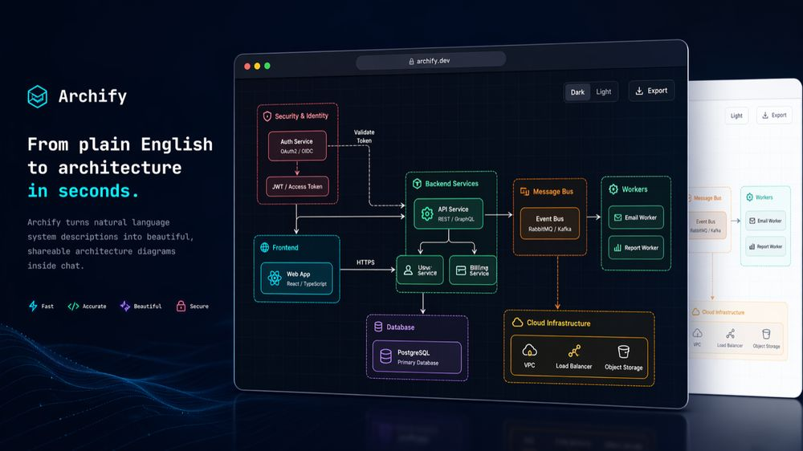
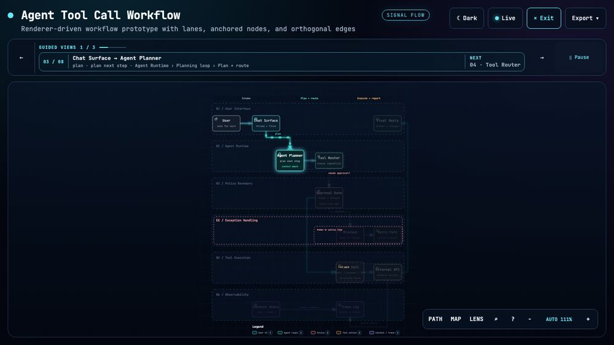
Generates self-contained HTML files featuring motion-based visualization and crisp exports. Automates the documentation of complex system lifecycles, sequence flows, and data architectures. Integrates into agentic workflows to provide visual transparency for technical infrastructure. Ideal for engineering teams needing to maintain up-to-date, verifiable system documentation.
Go
469★
A lightweight, self-hosted notification infrastructure for developers to monitor application events.
Written in Go for high performance and minimal resource footprint in production environments. Provides a centralized inbox for real-time alerts triggered by various microservices or backend processes. Simplifies the observability stack by pushing critical system notifications directly to mobile devices. Designed for easy deployment as a standalone service within existing infrastructure.
2026-08-29
5 repo(s)
TypeScript
473★
An autonomous AI workforce platform designed for production-grade software delivery.
Built with TypeScript for high-performance agentic workflows. Focuses on end-to-end automation of software development lifecycles. Enables teams to deploy autonomous agents to handle complex coding and shipping tasks. Designed for scalability in professional engineering environments.
TypeScript
1383★
An open-source video editing platform specifically engineered for integration with coding agents.
TypeScript-based architecture optimized for programmatic video manipulation. Provides an API-first interface for AI agents to perform automated video editing. Facilitates the creation of dynamic media content via agentic workflows. Useful for automated content generation pipelines and AI-driven media production.
TypeScript
784★
A framework that pairs ChatGPT's planning capabilities with Codex's execution harness.
Combines LLM reasoning for high-level planning with specialized code generation models. Implements a modular architecture to separate intent from implementation. Enhances reliability in automated coding tasks by decoupling strategy from syntax. Ideal for building complex agentic systems that require precise code execution.
Python
479★
A virtualization tool for running macOS and iOS environments within QEMU.
Leverages QEMU infrastructure to emulate Apple Silicon and mobile hardware. Supports a wide range of virtualized iPhone and Mac environments. Provides critical infrastructure for cross-platform testing and security research. Enables automated CI/CD pipelines for mobile and desktop applications on non-Apple hardware.
TypeScript
21887★
An immersive multi-agent interactive classroom environment for collaborative learning.
TypeScript-based framework for orchestrating multiple autonomous agents. Simulates complex interactive scenarios for training and educational research. Provides a sandbox for testing multi-agent coordination and communication protocols. Applicable for modeling agentic behavior in collaborative or competitive environments.
2026-08-28
5 repo(s)
Python
4830★
An intelligent AI agent framework designed to extend LLM capabilities into daily communication platforms.
Built on the openJiuwen architecture using Python for high-level agent orchestration. Integrates LLMs directly into messaging apps to facilitate real-time, agentic workflows. Designed for seamless interaction between users and complex AI reasoning models. Focuses on accessibility and immediate deployment of agentic tasks in everyday environments.
Python
902★
An autonomous research system engineered for generating measurable and computer-executable research outputs.
Utilizes Python-based autonomous agents to conduct systematic research processes. Focuses on producing verifiable, executable code artifacts rather than just text-based reports. Ideal for quantitative analysis, automated data gathering, and reproducible scientific experimentation. Reduces human intervention in the research lifecycle through iterative, goal-oriented execution.
Python
567★
A world-model-as-a-harness framework designed for simulating and testing AI agent environments.
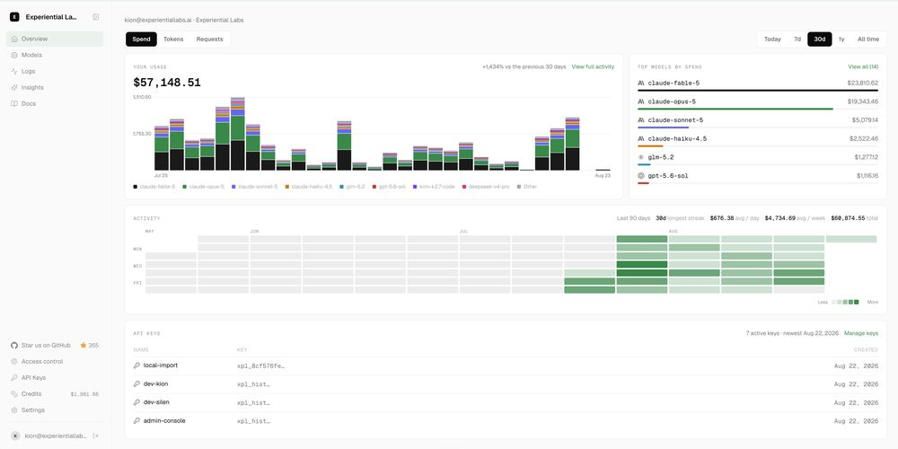
Provides a structured environment for training and evaluating agentic behavior in simulated worlds. Uses a world-model approach to bridge the gap between abstract LLM reasoning and physical/virtual environmental constraints. Serves as a critical infrastructure tool for developers building robust, reliable AI agents. Enables rigorous testing of agent decision-making processes before deployment in real-world scenarios.
Python
662★
A family of universal multimodal embedding models developed by Tencent for advanced understanding and retrieval.
Leverages multimodal architectures to map text, images, and other data types into a unified vector space. Optimized for high-performance retrieval tasks, making it suitable for large-scale fintech and search applications. Provides a foundational component for building RAG (Retrieval-Augmented Generation) systems with multimodal capabilities. Maintained by the WeChat Vision Team, ensuring enterprise-grade performance and scalability.
Jupyter Notebook
258★
A collection of framework-free Jupyter notebooks focused on core AI engineering skills and agentic workflows.
Covers essential technical pillars including model APIs, structured output, and tool calling. Emphasizes 'evals-as-the-spine' methodology to ensure quality and reliability in AI development. Provides hands-on, low-level implementations of RAG and agent loops without the bloat of heavy frameworks. Targeted at forward-deployed engineers needing to master the fundamentals of modern AI infrastructure.
2026-08-27
5 repo(s)
Python
111086★
A powerful Python library that enables AI agents to interact with and navigate websites as humans do.
Built on Playwright for robust browser automation and DOM interaction. Provides a standardized interface for LLMs to execute complex web-based workflows. Ideal for automating data extraction, web testing, and agentic research tasks. Supports multi-step navigation, form filling, and dynamic content handling.
Python
1772★
A comprehensive Python framework designed for developing, backtesting, and deploying quantitative trading strategies.
Modular architecture supporting data ingestion, strategy logic, and execution. Includes built-in backtesting engines to validate trading performance against historical data. Supports live trading integration with various exchanges and broker APIs. Designed for systematic traders looking to automate portfolio management and execution.
Python
51404★
An open-source, agentic video production system featuring extensive pipelines and production-knowledge libraries.
Orchestrates over 700 agent skills and 100+ specialized production tools. Utilizes a multi-agent architecture to handle complex creative and technical video workflows. Automates end-to-end production from conceptualization to final rendering. Highly extensible framework for integrating AI-driven content generation into professional pipelines.
Shell
635★
A library focused on low-level agentic design patterns to improve agent reasoning and decision-making reflexes.
Implements foundational engineering patterns for agentic systems. Focuses on 'reflexive' behavior, allowing agents to access pre-defined wisdom during execution. Framework-agnostic design, compatible with various existing agent architectures. Aims to reduce hallucination and improve reliability in complex task-solving environments.
Go
768★
A network utility that provides netcat-like functionality over the Tailscale data plane without requiring a central control plane.
Leverages Tailscale's peer-to-peer mesh networking for secure, encrypted communication. Simplifies cross-network connectivity for infrastructure debugging and data transfer. Operates as a lightweight binary, ideal for DevOps and infrastructure troubleshooting. Provides a secure alternative to traditional netcat for sensitive internal network operations.
2026-08-26
5 repo(s)
Python
100180★
A multi-agent LLM framework specifically designed for financial trading and market analysis.
Built on a multi-agent architecture where specialized LLM agents handle data analysis, strategy formulation, and risk management. Integrates with financial data APIs to provide real-time market context for decision-making. Designed for quantitative finance professionals to automate trading workflows using agentic reasoning. Supports backtesting and simulation environments to validate agent performance before deployment.
TypeScript
20226★
An OpenAI-compatible proxy that aggregates free tiers from 28 LLM providers into a single unified endpoint.
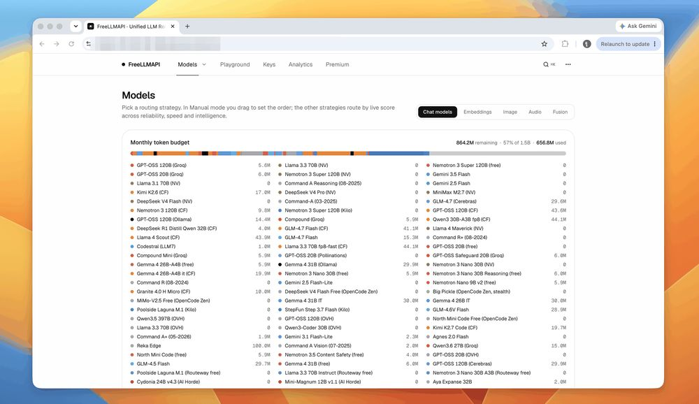
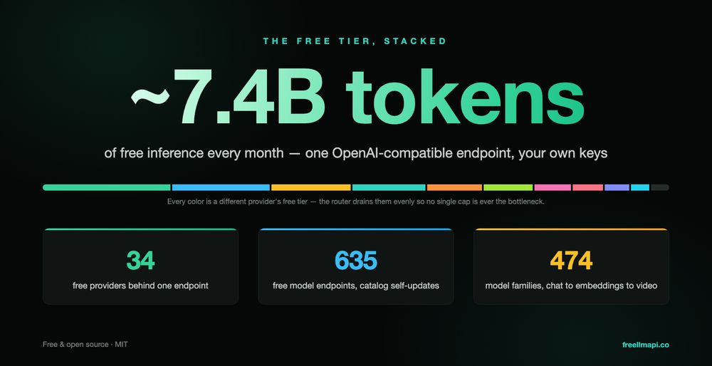
Implements smart routing and automatic failover across multiple LLM providers to ensure high availability. Provides a standard /v1 API interface, making it a drop-in replacement for existing OpenAI-based applications. Optimizes infrastructure costs by leveraging free-tier token allowances across a massive provider network. Ideal for developers building high-volume AI applications who need to minimize latency and API expenses.
Python
546★
A lightweight, zero-dependency agent framework featuring a native TUI and support for ReAct and multi-agent team modes.
Features a native command-line TUI for real-time interaction and monitoring of agentic workflows. Supports both ReAct (Reasoning + Acting) and collaborative Agent Team modes for complex task execution. Designed for portability with no hard Docker dependency and a 'one-command' installation process. Focuses on developer productivity by streamlining the deployment of autonomous agents in local environments.
Python
6041★
An autonomous development framework for game engines like Godot, Bevy, and Babylon.js using LLM-driven code generation.
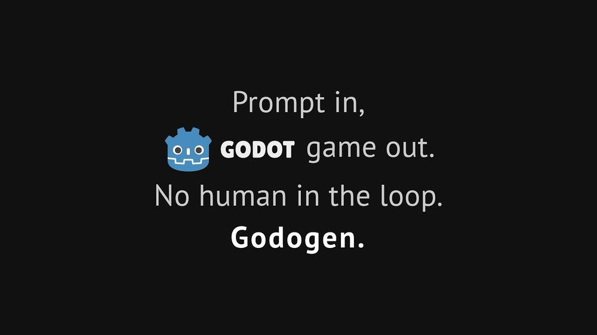
Leverages Claude Code and Codex to automate the generation of game logic and scene structures. Provides a bridge between high-level natural language prompts and low-level engine-specific APIs. Reduces boilerplate in game development by automating repetitive coding tasks across multiple engine architectures. Useful for rapid prototyping and building complex game systems through agentic assistance.
—
207158★
A curated CLAUDE.md configuration file optimized to improve LLM coding performance based on Andrej Karpathy's engineering insights.
Systematizes best practices for LLM-assisted coding by codifying common pitfalls and effective patterns. Acts as a 'system prompt' enhancement to force better reasoning and code structure from AI coding assistants. Directly improves the quality of generated code, documentation, and architectural decisions in dev workflows. Essential for software engineers looking to maximize the reliability and accuracy of their AI-driven development tools.
2026-08-25
5 repo(s)
Python
33990★
An AI-driven job application framework that automates the evaluation of postings, CV tailoring, and interview preparation.
Built on top of Claude Code for high-fidelity LLM interaction. Automates the end-to-end job search lifecycle including cover letter generation and interview prep. Runs locally on the user's machine to ensure data privacy and ownership of the application process. Ideal for professionals looking to scale their job search efforts using agentic workflows.
JavaScript
2216★
An anti-laziness framework for AI agents utilizing the Depth Tree method to maximize task execution quality.
Implements the 'Depth Tree' method to recursively split complex tasks into granular sub-tasks. Allocates full-task time budgets to leaf nodes to force deep reasoning and prevent LLM 'laziness'. Designed to improve the output quality of autonomous agents in complex coding or research tasks. Highly relevant for developers building agentic systems that require high-accuracy, multi-step reasoning.
Java
21930★
A lightweight, open-source local emulator for AWS services designed to replace heavy infrastructure dependencies.
Java-based architecture providing a fast, local alternative to cloud-based AWS environments. Reduces infrastructure costs and latency during the development and testing phases of cloud-native apps. Supports local integration testing for fintech and enterprise applications requiring AWS parity. Simplifies devops workflows by eliminating the need for constant cloud connectivity.
Python
11839★
A self-organizing AI second brain that integrates Claude Code with Obsidian for automated knowledge management.
Uses Claude Code to parse, link, and categorize unstructured data into a Markdown-based knowledge graph. Enables automated personal knowledge management (PKM) for researchers and tech professionals. Maintains data sovereignty by storing all information in local, plain-text Markdown files. Transforms disparate notes and documents into a searchable, interconnected intelligence layer.
—
31833★
A massive, curated repository of 1000+ agent skills compatible with major CLI tools like Claude Code and Cursor.
Provides a standardized library of 'skills' that extend the capabilities of LLM-based agents. Cross-compatible with popular agentic frameworks including Gemini CLI, Codex, and Claude Code. Accelerates the development of specialized agents by providing pre-built, community-vetted logic. Essential infrastructure for developers building modular, high-utility agentic systems.
2026-08-24
5 repo(s)
Python
235518★
A highly adaptive, evolving AI agent framework designed for complex task orchestration.
Built on a modular Python architecture designed for continuous learning and state management. Focuses on agentic workflows that scale in complexity alongside user requirements. Ideal for automating multi-step research, coding, or data analysis tasks. Leverages advanced LLM reasoning to maintain context across long-running operations.
Rust
37064★
A local-first personal AI orchestrator that builds a persistent memory of your digital life.
Written in Rust for high-performance, memory-safe execution and local data privacy. Functions as a central brain for managing agent fleets and complex automated workflows. Provides deep research capabilities by indexing local-first memory stores. Targeted at power users needing a private, persistent AI assistant for personal knowledge management.
Python
1797★
A comprehensive curriculum for mastering GPU performance engineering at the scale of frontier AI labs.
Curated educational path covering hardware architecture, CUDA optimization, and kernel tuning. Focuses on the critical infrastructure layer required to train and serve large-scale LLMs. Provides actionable insights into reducing latency and compute costs for AI workloads. Essential for quant developers and infra engineers working on high-throughput AI systems.
JavaScript
109458★
An AI agent framework optimized for minimalist, high-efficiency code generation.
Implements a 'lazy' heuristic to prioritize existing solutions and minimal code footprint. Designed to integrate into developer workflows to reduce technical debt and bloat. Utilizes LLM reasoning to evaluate whether a feature is necessary before implementation. Useful for rapid prototyping and maintaining clean, maintainable codebases.
Python
25088★
A tool that converts technical PDF documentation into executable Claude Code skills.
Python-based pipeline for parsing technical literature and transforming it into structured agent instructions. Enables AI agents to reference domain-specific knowledge bases during coding or troubleshooting. Streamlines the onboarding of new technical stacks by turning static manuals into active agent capabilities. Highly relevant for fintech and quant teams needing to integrate proprietary documentation into AI workflows.
2026-08-23
5 repo(s)
TypeScript
973★
Official A-share financial data service designed for AI agents, quantitative research, and application development.
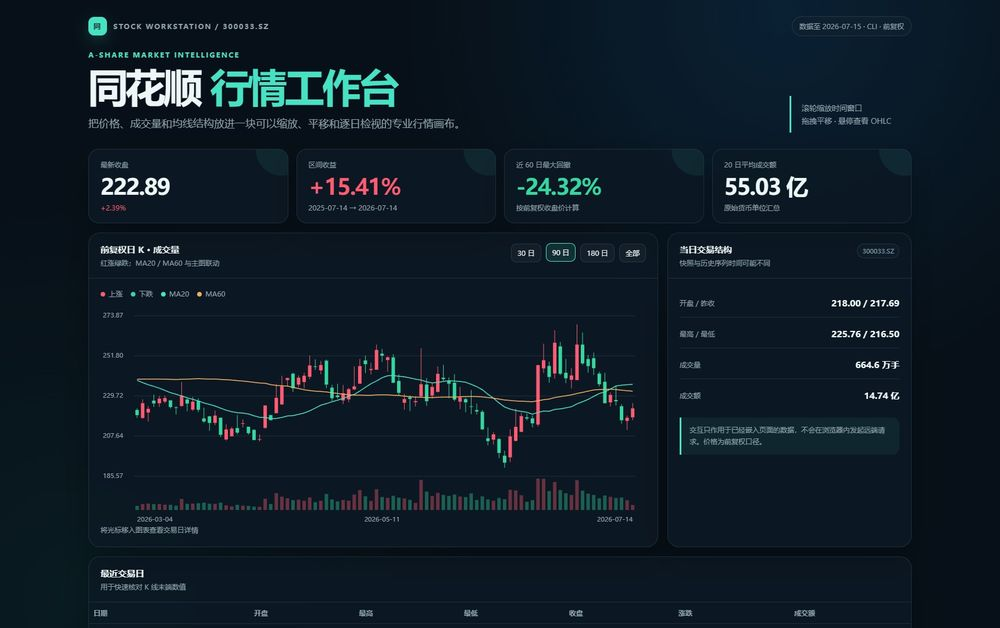
Provides real-time and historical stock market data, financial statements, and index information. Supports multiple integration methods including API, MCP (Model Context Protocol), CLI, and Python. Specifically engineered for quant developers and AI agents requiring structured financial data. Official service from Tonghuashun (HiThink), ensuring high data reliability for trading applications.
Python
38590★
An all-in-one platform for product analytics, session replay, and AI observability.
Comprehensive stack including analytics, feature flags, error tracking, and AI observability tools. Enables developers to build 'self-driving' products by monitoring user behavior and model performance. Ideal for fintech and SaaS companies needing deep insights into user interaction and system health. Self-hostable infrastructure that integrates directly into the product development lifecycle.
JavaScript
1321★
Browser-based infrastructure that optimizes AI agent performance while reducing token consumption.
Acts as a specialized browser layer for agentic workflows to improve interaction efficiency. Reduces LLM token spend by up to 90% through intelligent browser-based data extraction. Provides a robust infrastructure layer for agents that need to navigate complex web environments. Focuses on cost-effective automation for developers building high-frequency agentic tasks.
JavaScript
242152★
A performance optimization system for agent harnesses, focusing on skills, memory, and security.
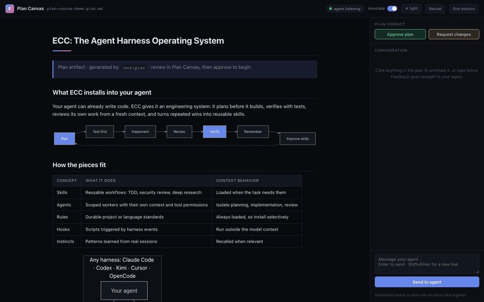
Provides a structured framework for managing agent instincts, memory, and research capabilities. Compatible with major coding agents like Claude Code, Codex, and Cursor. Implements security and performance layers to optimize the development lifecycle of autonomous agents. Designed to scale agentic workflows by standardizing how agents interact with external tools.
Go
1138★
A lightweight, S3-compatible object storage server designed for high-performance infrastructure.
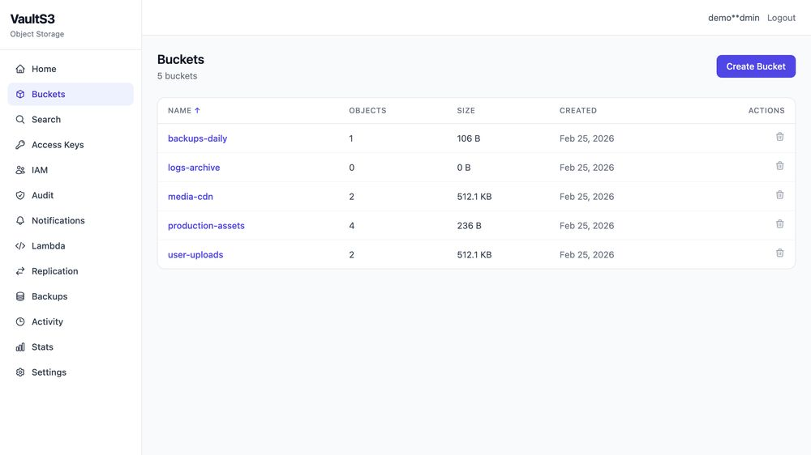
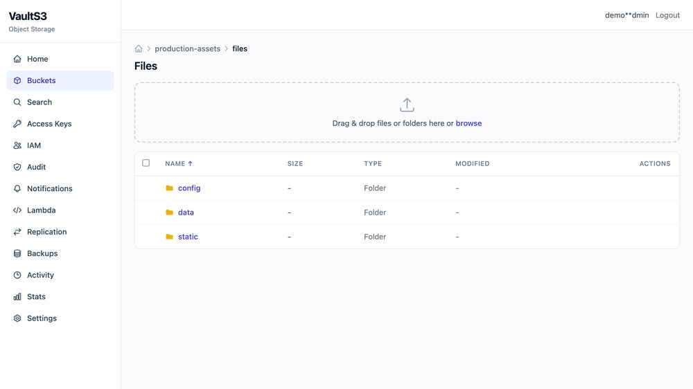
Built in Go as a single binary with low memory footprint, ideal for edge or containerized environments. Includes a built-in web dashboard for easy management and monitoring of stored assets. Features encryption at rest, making it suitable for secure data storage in fintech or sensitive applications. Provides a drop-in S3-compatible interface for developers needing local or private cloud storage infrastructure.
2026-08-22
5 repo(s)
Python
5334★
A comprehensive full-stack AI Red Teaming platform designed to secure AI ecosystems and LLM deployments.
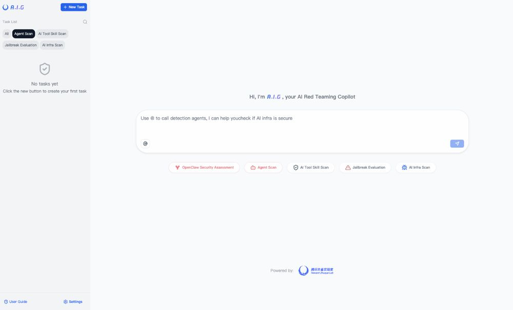
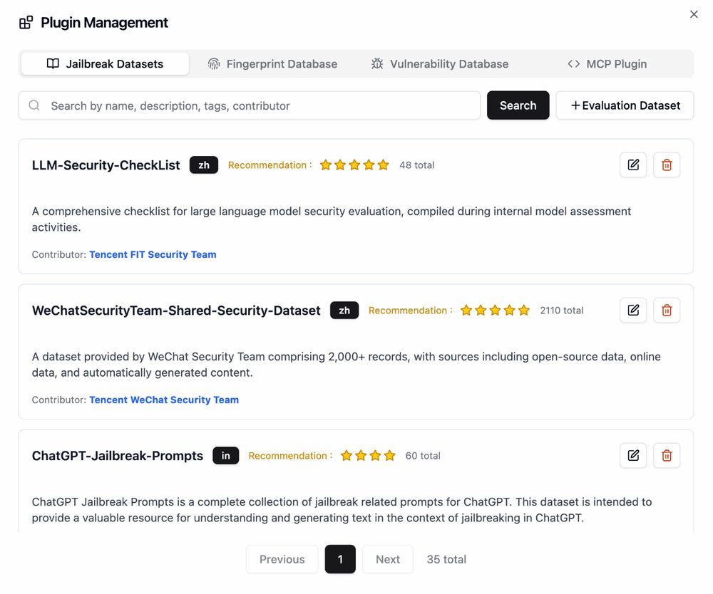
Built with Python to provide automated security scanning for AI infrastructure and agentic workflows. Features specialized modules for MCP (Model Context Protocol) scanning, AI Infra auditing, and LLM jailbreak evaluation. Addresses critical enterprise security needs by identifying vulnerabilities in AI-integrated software pipelines. Essential for fintech and high-stakes environments where AI model integrity and data safety are paramount.
Python
109233★
A tool that transforms complex codebases, SQL schemas, and documentation into a queryable knowledge graph.
Utilizes local deterministic AST parsing to map relationships between code, configs, and database schemas. Integrates directly with Claude Code, Cursor, and other CLI tools as a specialized agent skill. Enables developers to perform semantic queries across massive repositories to understand architectural dependencies. Highly relevant for quant and fintech engineers needing to audit complex logic or legacy financial systems.
Mojo
28670★
A high-performance platform featuring the Mojo programming language and MAX engine for AI infrastructure.
Combines the usability of Python with the performance of C/C++ via the Mojo language. Provides a unified AI engine (MAX) designed to optimize model inference across diverse hardware backends. Focuses on low-latency execution, making it ideal for high-frequency trading or real-time AI inference. Represents a significant shift in infrastructure tooling for developers building high-performance AI applications.
Python
1009★
A state-aware routing framework for agent-to-agent (A2A) networks supporting self-correction and collaboration.
Implements advanced routing logic for multi-agent systems, including SELF, COLLABORATE, and HANDOFF patterns. Built in Python to manage complex agent workflows where tasks must be delegated or verified by specialized sub-agents. Focuses on state-awareness to ensure consistency across distributed agent interactions. A critical component for building scalable, agentic infrastructure in complex enterprise environments.
Python
73844★
A CLI-based tool that provides AI agents with real-time, zero-fee access to major social and content platforms.
Enables agents to search and read data from Twitter, Reddit, YouTube, GitHub, and other platforms without API costs. Acts as a bridge for agents to ingest live market sentiment or technical discussions directly into their context window. Simplifies the infrastructure required for agents to perform web-based research and data gathering. Highly useful for quant researchers and fintech analysts looking to automate the ingestion of alternative data sources.
2026-08-21
5 repo(s)
TypeScript
49982★
An Agent Development Environment (ADE) designed to orchestrate and manage fleets of parallel AI agents.
Built with TypeScript for cross-platform compatibility across desktop, mobile, and VPS environments. Provides a unified interface to manage multiple coding agents simultaneously using personal subscriptions. Focuses on agentic workflow orchestration, enabling complex multi-agent task execution. Ideal for developers scaling agentic automation for software engineering and complex task management.
Python
20697★
An intelligent memory layer for AI agents that enables persistent learning and context retention.
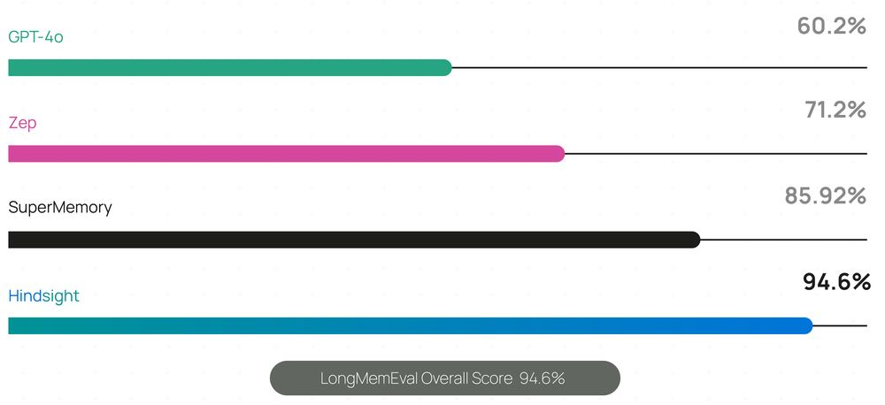
Python-based architecture designed to integrate seamlessly with existing LLM agent frameworks. Implements advanced memory retrieval mechanisms to allow agents to 'learn' from past interactions. Solves the context window limitation by providing long-term, searchable storage for agentic workflows. Critical infrastructure for building autonomous agents that require stateful memory for complex reasoning.
TypeScript
1574★
Open-source AI coworkers equipped with their own virtual computer environments to execute tasks autonomously.
TypeScript-based framework that provides agents with dedicated access to browsers, file systems, and CLI tools. Features a 'plan-then-act' architecture where agent decisions are verified and recorded for transparency. Designed to bring agentic capabilities to any UI, allowing for seamless human-AI collaboration. Useful for automating repetitive desktop workflows, data extraction, and complex multi-step research tasks.
TypeScript
11064★
A developer tool that replaces volatile port numbers with stable, human-readable local URLs.
TypeScript implementation that simplifies local service discovery for both humans and automated agents. Eliminates the friction of managing dynamic port assignments in complex microservice or agentic architectures. Provides a stable networking layer that improves the reliability of local development environments. Essential for infrastructure setups where agents need to reliably communicate with multiple local services.
Rust
1041★
A high-performance graph database optimized for operation on object storage.
Written in Rust to ensure memory safety and high-concurrency performance for large-scale data. Architected to leverage low-cost object storage while maintaining the speed of a native graph database. Designed for complex relationship mapping, making it ideal for financial fraud detection and entity resolution. Provides a scalable backend for AI applications that require deep link analysis and knowledge graph traversal.
2026-08-20
5 repo(s)
Python
29793★
A comprehensive library of 817 structured cybersecurity skills designed for AI agents.
Built on the agentskills.io standard for interoperable agentic workflows. Maps directly to major security frameworks including MITRE ATT&CK, NIST CSF 2.0, and NIST AI RMF. Enables automated threat detection, fraud prevention, and security posture assessment. Provides a standardized interface for LLMs to execute complex cybersecurity operations.
Python
19816★
A high-performance LLM inference server optimized for Apple Silicon with continuous batching and SSD caching.
Utilizes continuous batching to maximize throughput on local macOS hardware. Features intelligent SSD caching to manage model weights and context efficiently. Managed via a native macOS menu bar interface for seamless local development. Ideal for running private, high-speed inference for local agentic or RAG applications.
TypeScript
2647★
A local multi-agent harness designed for orchestrating complex task execution.
Framework for managing multi-agent interactions within a local environment. Focuses on agent coordination, task delegation, and state management. Provides a structured harness for testing and deploying agentic workflows. Useful for developers building autonomous systems that require multi-step reasoning.
Python
670★
A toolkit for persistent SSH sessions and local safety controls for AI coding agents.
Provides secure, persistent session management for Claude Code and other coding agents. Implements granular local safety controls to sandbox agentic execution. Supports Linux and macOS environments for infrastructure-level agent integration. Ensures reliable, long-running agentic tasks without session timeouts or security risks.
Python
10578★
An AI-driven tool for generating production-quality technical diagrams from natural language.
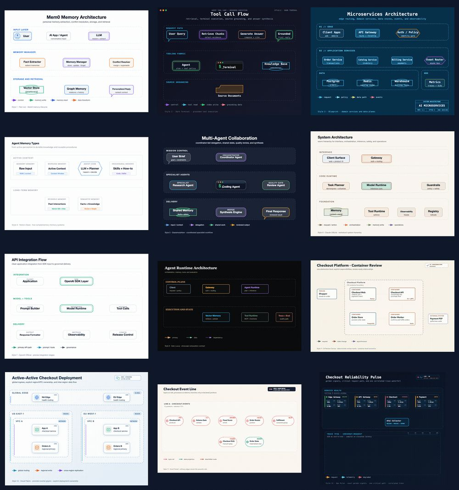
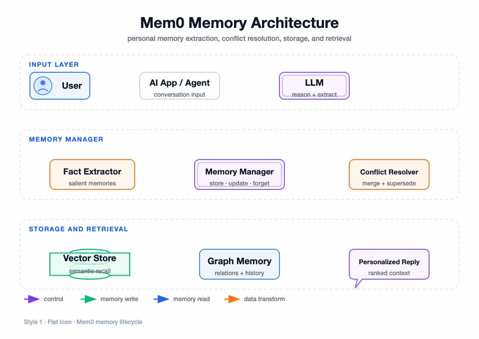
Generates SVG and PNG outputs using natural language prompts. Supports UML, technical architecture patterns, and agentic workflow visualization. Offers 7 distinct design styles for professional documentation. Automates the creation of complex system diagrams, reducing manual design overhead.
2026-08-19
5 repo(s)
Python
29319★
A self-evolving context database designed to unify agent memory, knowledge RAG, and skill sets.
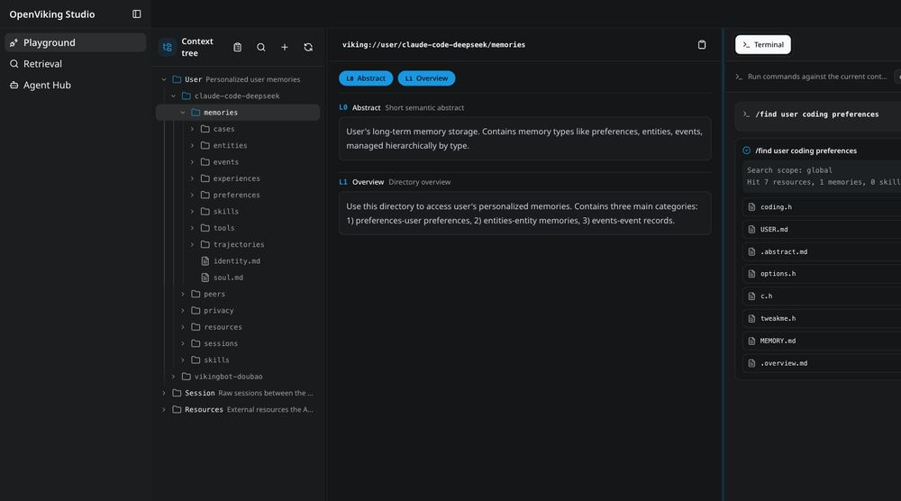
Built as a centralized infrastructure layer for AI agents to manage long-term state. Integrates RAG and skill-execution modules into a single, self-evolving database architecture. Optimizes agent performance by reducing context fragmentation and improving knowledge retrieval. Ideal for enterprise-grade agentic workflows requiring persistent, evolving memory.
Python
1812★
A general-purpose framework providing fine-grained feedback for AI agents without requiring additional model training.
Uses a verification-based architecture to validate agent outputs in real-time. Framework-agnostic design allows it to be applied to coding, robotics, and complex reasoning tasks. Eliminates the need for expensive fine-tuning by leveraging LLMs as external verifiers. Crucial for high-stakes environments where agent reliability and accuracy are paramount.
Python
10650★
An independent auditing framework designed to verify that AI agents are performing their intended tasks correctly.
Provides a structured auditing layer for the AI agent economy to ensure operational compliance. Supports both human-in-the-loop and autonomous self-auditing workflows. Addresses the 'alignment' problem by validating agent actions against predefined goals. Essential for fintech and regulated industries where agentic behavior must be auditable.
Rust
15225★
A high-performance vector index built on TurboQuant, implemented in Rust with Python bindings.
Leverages Rust for memory safety and high-speed vector computation. Designed for low-latency similarity search, critical for quant trading and financial data analysis. Provides Python bindings for seamless integration into existing data science and ML pipelines. Optimized for large-scale vector operations where throughput and latency are key constraints.
Rust
2682★
A Rust-based solution for long-term memory in agent coding CLIs, facilitating seamless handoffs between different agent vendors.
Implements a standardized memory layer to bridge the gap between disparate agentic systems. Written in Rust to ensure high performance and reliability for CLI-based development tools. Enables state persistence across different agent sessions and vendor implementations. Solves the 'context loss' problem in multi-agent development environments.
2026-08-18
5 repo(s)
TypeScript
149564★
A modular, plugin-based architecture designed to extend the capabilities of DeepSeek models into a versatile agentic framework.
Built on a TypeScript-based plugin architecture that treats every capability as a modular component. Serves as the core runtime for integrating LLM reasoning into complex, multi-step workflows. Enables developers to build custom agentic behaviors by chaining plugins for specific tasks. Provides a standardized interface for extending model functionality beyond simple text generation.
TypeScript
874★
An open-source agent harness providing the essential runtime layer to transform raw LLMs into functional, autonomous agents.
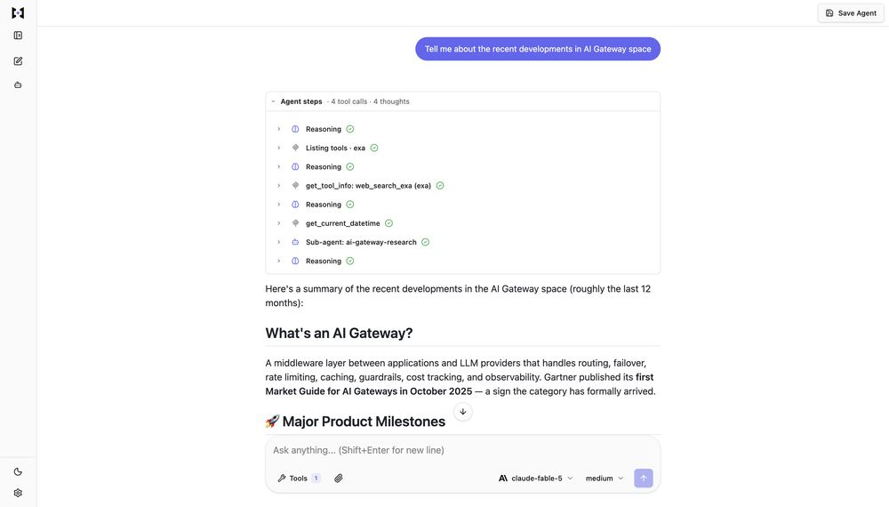
Acts as the middleware between LLM providers and agentic execution environments. Focuses on the infrastructure layer required to manage agent state, tool execution, and memory. Designed to bridge the gap between experimental LLM prompts and production-grade agentic systems. Provides a unified interface for developers to deploy and orchestrate agent workflows.
TypeScript
1030★
A cross-platform team chat application where AI agents act as first-class, collaborative teammates.
Integrates AI agents directly into the communication flow, allowing them to participate in team discussions. Supports flexible backend configurations including cloud-based models or local 'bring-your-own' brains like Claude Code. Designed for collaborative agentic workflows where humans and AI co-develop software or manage projects. Focuses on the human-agent interaction layer to improve team productivity and coordination.
JavaScript
64574★
An AI-powered CLI tool that automates job searching, application tracking, and CV tailoring using structured evaluation rubrics.
Uses LLM-based analysis to score job listings on a 1.0-5.0 scale based on custom criteria. Automates the tedious process of tailoring CVs to match specific job descriptions. Operates locally within an AI coding CLI environment for privacy and seamless integration with development workflows. Provides a structured, data-driven approach to the job hunting process for tech professionals.
Python
54091★
An open-source AI-driven penetration testing tool designed to identify and remediate application vulnerabilities.
Leverages LLM agents to automate the discovery of security flaws in application codebases. Provides actionable remediation steps to fix identified vulnerabilities, reducing manual security overhead. Focuses on the intersection of AI and DevSecOps to improve software infrastructure security. Designed to be integrated into CI/CD pipelines for continuous security monitoring.
2026-08-17
3 repo(s)
TypeScript
8514★
An open-source, agent-first CRM designed specifically to manage and interact with AI agents.
Built with a modern TypeScript stack optimized for agentic workflows. Provides a structured data layer for AI agents to read, write, and update customer relationship records. Enables autonomous sales and support agents to maintain state and context across long-running interactions. Designed to bridge the gap between traditional CRM data structures and LLM-based reasoning engines.
Rust
3206★
A distributed platform designed for running and scaling agent environments in production.
Written in Rust to ensure high-performance, memory-safe execution of agent environments. Provides a distributed architecture to handle concurrent agent tasks at scale. Focuses on the infrastructure layer required to manage stateful environments for AI agents. Useful for developers building complex agentic systems that require consistent, isolated execution sandboxes.
Python
85★
A technical registry documenting common pitfalls and performance traps in LLM serving infrastructure.
Curates technical edge cases involving CUDA toolchains, KV cache allocation, and quantization kernels. Serves as a diagnostic reference for engineers debugging 'confidently wrong' measurements in model serving. Covers critical infrastructure components including tool parsers, reasoning fields, and evaluation harnesses. Essential for finance and tech professionals building high-reliability AI systems where latency and accuracy are paramount.
2026-08-16
3 repo(s)
C
5752★
A highly optimized C99 implementation capable of running a 2.78-trillion-parameter model inference on a single CPU with minimal RAM.
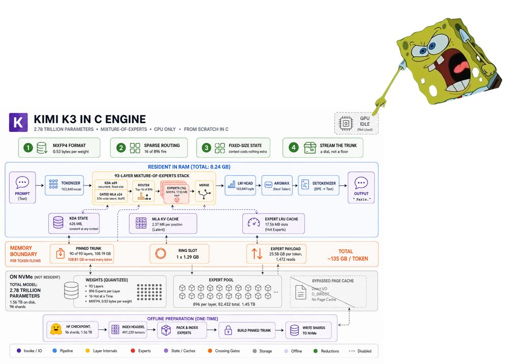
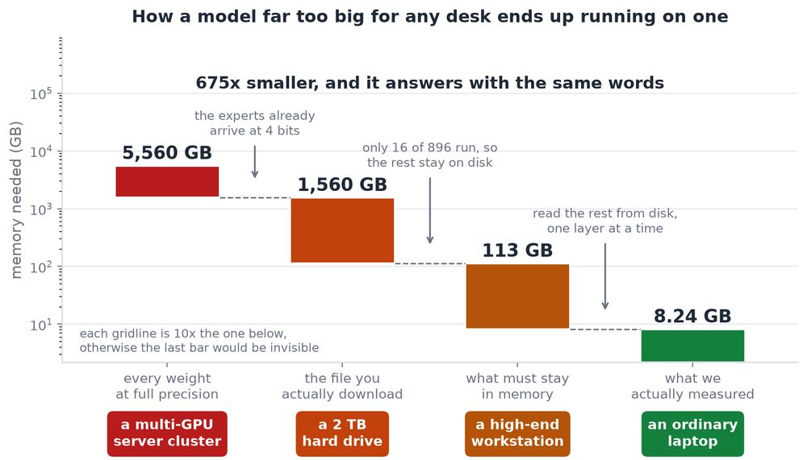
Tech Structure: Pure C99 implementation with zero dependencies on BLAS, GPU frameworks, or external libraries. Purpose: Demonstrates extreme hardware efficiency by running massive-scale models on standard consumer CPUs. Use Cases: Ideal for edge computing, local privacy-focused inference, and reducing cloud infrastructure costs for large-scale model deployment.
Python
85★
A diagnostic tool that predicts inference speed and memory fit for GGUF models on specific hardware configurations.
Tech Structure: Python-based benchmarking utility that self-calibrates against local hardware specs. Purpose: Eliminates the guesswork in model deployment by calculating exact token-per-second performance before downloading large weights. Use Cases: Essential for quant researchers and infrastructure engineers optimizing LLM serving costs on heterogeneous hardware.
Python
201★
An open-source GitOps control plane designed to unify OpenTofu and Ansible for hybrid cloud infrastructure management.
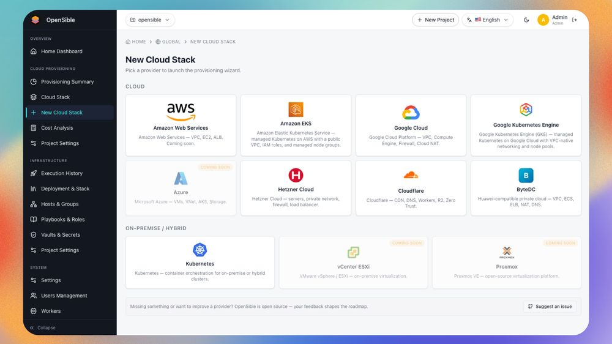
Tech Structure: Python-based orchestration engine providing a centralized control plane for infrastructure-as-code. Purpose: Bridges the gap between provisioning (OpenTofu) and configuration management (Ansible) in a single GitOps workflow. Use Cases: Automating complex multi-cloud deployments, enforcing infrastructure compliance, and managing on-premise to cloud migrations.
2026-08-15
3 repo(s)
Python
81★
A fully automated AI trading agent that executes real Robinhood orders via an Agentic Trading MCP with hard-coded, immutable risk constraints.
Tech Stack: Python-based agentic framework utilizing Model Context Protocol (MCP) for secure tool integration. Purpose: To bridge the gap between autonomous AI decision-making and strict, auditable financial risk management. Use Cases: Automated execution of trading strategies where the model's logic is constrained by non-overrideable safety rules. Key Feature: Implements a 'mechanical' risk layer that prevents the AI from violating predefined capital protection parameters.
Swift
5970★
A highly optimized inference engine enabling Gemma 4 26B-A4B models to run on standard M-series MacBooks using only 2 GB of RAM.
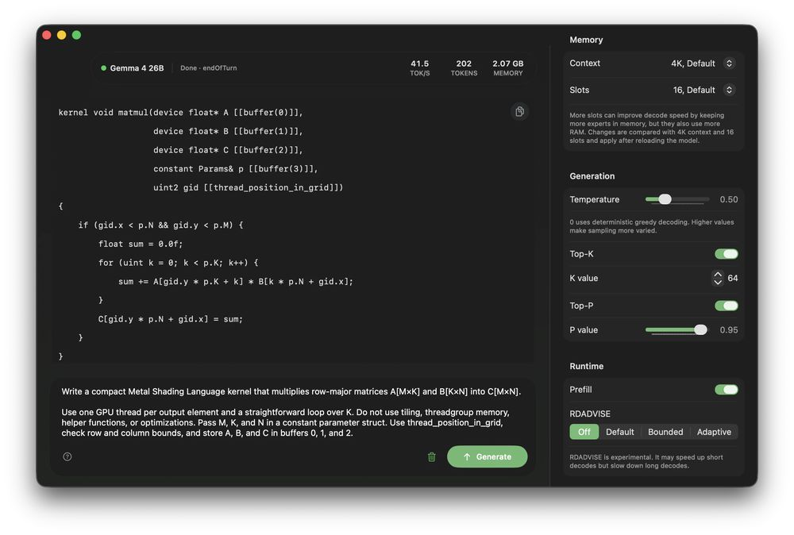
Tech Stack: Written in Swift, leveraging low-level memory management and hardware-specific optimizations for Apple Silicon. Purpose: To democratize access to high-parameter LLMs by drastically reducing the hardware requirements for local inference. Use Cases: Running sophisticated AI models on consumer-grade laptops without cloud dependency or massive memory overhead. Key Feature: Achieves extreme memory efficiency, allowing large-scale model deployment on devices previously considered incapable.
Rust
130★
A native, local-first knowledge graph engine built in Rust for indexing and navigating complex codebases and project artifacts.
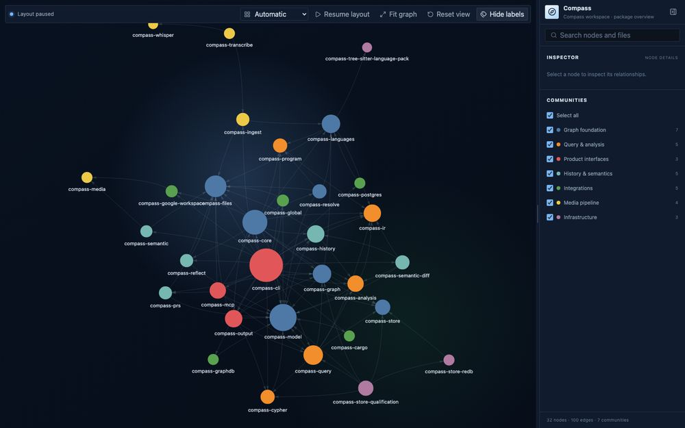
Tech Stack: Built in Rust for high-performance memory safety and concurrency, utilizing a local-first storage architecture. Purpose: To provide developers with a structured, queryable map of their project's internal logic and dependencies. Use Cases: Large-scale codebase navigation, automated documentation generation, and identifying architectural bottlenecks. Key Feature: Offers a persistent, searchable graph representation of code that evolves alongside the project, outperforming traditional grep-based tools.
2026-08-14
3 repo(s)
Python
587★
A local-first observability and cost-tracking dashboard for AI coding agents.
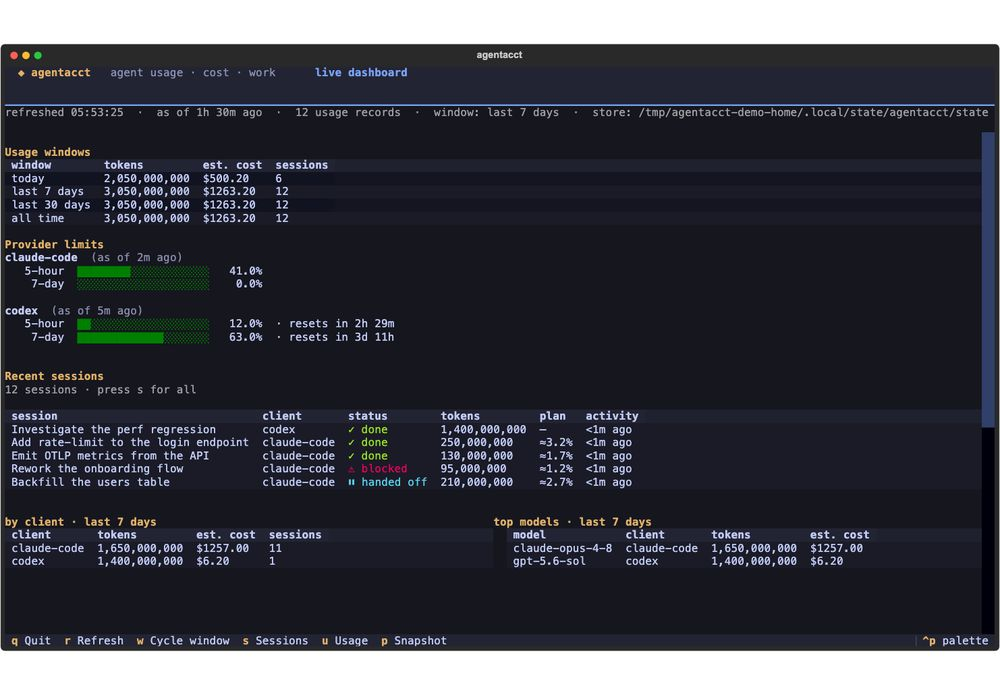
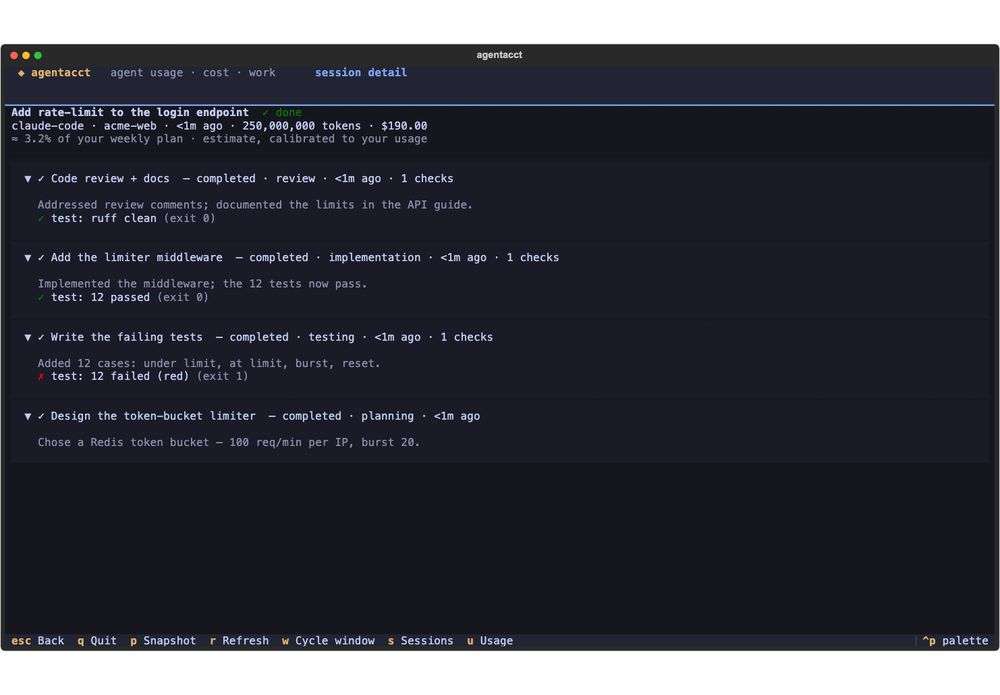
Tech Stack: Python-based local dashboard designed to ingest logs from Claude Code, Codex, and OpenAI agents. Purpose: Provides granular visibility into agentic workflows by tracking token consumption, latency, and financial costs per task. Use Cases: Ideal for developers and finance teams needing to audit AI ROI, debug agent tool usage, and monitor spend on automated coding tasks.
Python
349★
A multi-agent LLM framework specifically architected for quantitative trading research.
Tech Stack: Python-based modular framework utilizing multi-agent orchestration for financial data analysis. Purpose: Automates the research pipeline for trading strategies by delegating data retrieval, backtesting, and signal generation to specialized agents. Use Cases: Streamlining the development of algorithmic trading strategies and conducting rapid hypothesis testing in financial markets.
Python
186★
A high-performance, local-first dashboard for A-share market sentiment analysis and short-term trading review.
Tech Stack: Python-based engine that performs pure mathematical computation for market metrics, integrated with LLMs for narrative synthesis. Purpose: Provides real-time visualization of market breadth, liquidity, and sentiment cycles without relying on external cloud-based financial APIs. Use Cases: Quantitative traders and retail investors looking for a private, low-latency tool to track market momentum and identify trading opportunities in Chinese equity markets.
2026-08-13
3 repo(s)
Python
584★
A local-first observability dashboard for tracking the performance, token usage, and cost of coding agents.
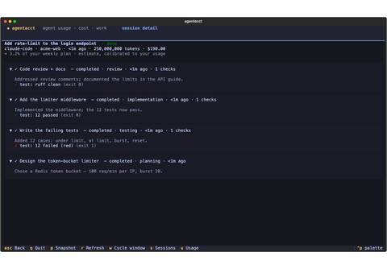
Built in Python with a focus on local-first data storage and privacy. Provides granular visibility into agent workflows, including file changes, tool execution, and test results. Calculates real-time financial metrics like token consumption and time-to-completion per task. Designed to integrate with popular coding agents like Claude Code and Codex to audit development efficiency.
Python
178★
A local-running A-share market sentiment and short-term trading dashboard that combines deterministic financial metrics with AI-driven analysis.
Uses a hybrid architecture: deterministic calculation for market metrics and LLM-based synthesis for narrative reporting. Features specialized modules for tracking limit-up pools, liquidity flows, and market sentiment cycles. Operates entirely locally to ensure data privacy and zero-cost API usage for market monitoring. Ideal for quantitative traders needing a high-level overview of Chinese market dynamics without relying on cloud-based financial platforms.
Rust
885★
A robotics-first visualization and data infrastructure tool for multimodal time-series data, built as a high-performance fork of Rerun.
Written in Rust, optimized for high-throughput ingestion and visualization of time-series data. Native ROS 2 support allows for seamless integration into existing robotics and automated data pipelines. Designed to handle complex, multi-sensor data streams with low latency, making it suitable for high-frequency trading backtesting or sensor fusion. Provides a robust framework for replaying and analyzing historical data recordings (.rrd files) with advanced visual inspection.
Daily Market Brief — generated automatically from public news feeds and market data. For information only; not investment advice.